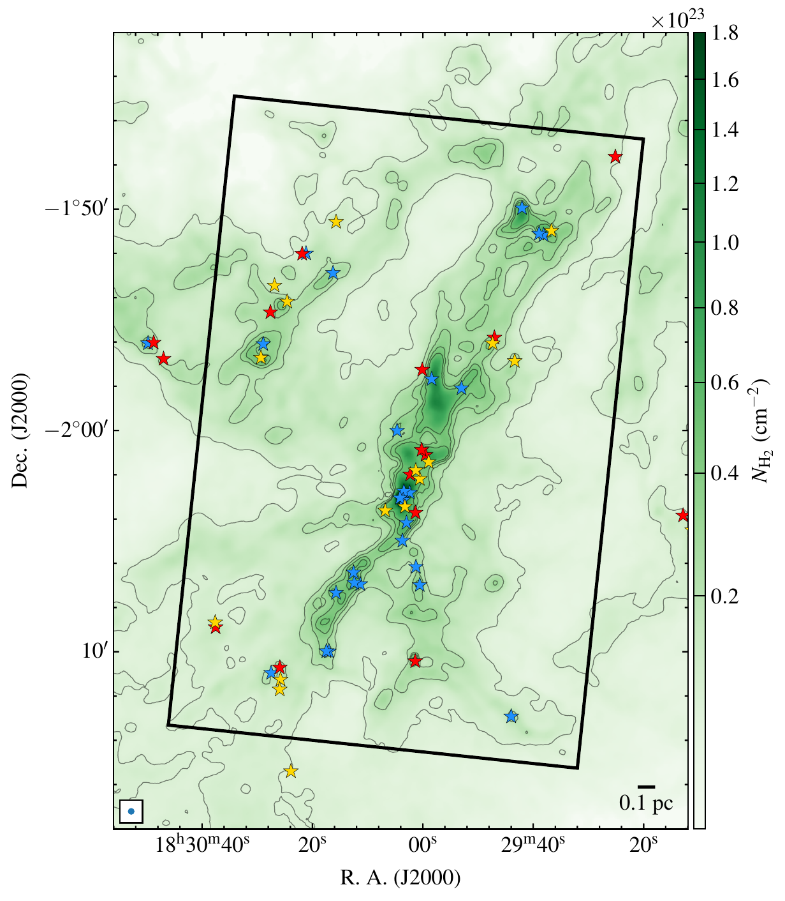

Molecular Clouds
Tracing how cold interstellar gas organizes into hierarchical structures across multiple spatial scales.
See related projects ↗Star formation · Molecular clouds · Gas kinematics
Exploring how filaments and dense cores form within molecular clouds.
PhD Student · KASI–UST · Republic of Korea
Stars form inside cold molecular clouds, where gravity, turbulence, and gas flows shape filamentary structures and dense cores. My research uses molecular-line and continuum observations to investigate these earliest stages of stellar birth.
I am currently pursuing a PhD at the Korea Astronomy and Space Science Institute and the University of Science and Technology under the supervision of Prof. Chang Won Lee.
Core themes
Tracing how cold interstellar gas organizes into hierarchical structures across multiple spatial scales.
See related projects ↗Identifying velocity-coherent structures and testing their stability, accretion, and dynamical evolution.
See related projects ↗Characterizing the compact condensations that represent the immediate precursors of stars.
See related projects ↗Using molecular-line spectroscopy to measure turbulence, velocity gradients, inflow, and infall.
See related projects ↗
Herschel NH₂ map · Serpens SouthFeatured project · 2025–2026
Combining JCMT C18O (2–1), Nobeyama N2H+ (1–0), and forthcoming ALMA observations to investigate velocity-coherent filaments, dense cores, mass flows, and hub-scale infall.
Velocity-coherent filaments and embedded dense cores in W40 and Serpens South.
Near-infrared spectroscopy and isotopic abundance ratios using TANSPEC data.
Constraining the photospheric He/H ratio through LTE spectral modelling.
Selected work
Lead author · The Astrophysical Journal
S. Moharana et al. · ApJ, 997, 117
Lead author · The Astrophysical Journal
S. Moharana et al. · ApJ, 974, 312
Co-author · The Astrophysical Journal
S. Gupta et al. · ApJ, 999, 180
Facilities and data